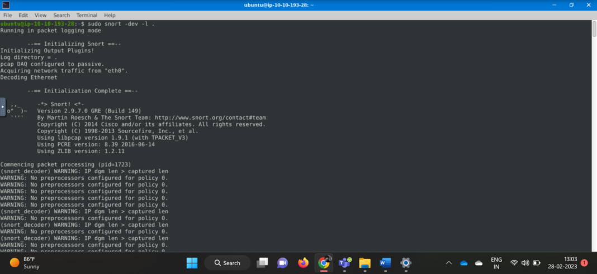

Fərdi Sərbəst İş - Snort aləti
Tələbə: Şıxəliyeva Xədicə
Müəllim: Abasova Əzimə
Fakültə: İnformasiya və Telekommunikasiya Texnologiyaları
Kafedra: Kibertəhlükəsizlik
İxtisas: İnformasiya Təhlükəsizliyi
Kurs: I
Qrup: 642a3
Fənn: Kibertəhlükəsizliyinin əsasları
Snort, Kali Linux-a daxil olan şəbəkə təhlükəsizliyi vasitəsidir. Şəbəkə trafikinə nəzarət edən və paketləri dərhal təhlil edən
IDS və ya IPS kimi istifadə edilə bilər. Snort açıq mənbə alətidir və təkmilləşmiş imza əsaslı müdaxilə & aşkarlama sistemi təklif edir.
O, müəyyən edilmiş hücum nümunələrini aşkar edir. Snort port skanları,
DDOS hücumları,
zərərli proqram fəaliyyətləri və digər şəbəkə əsaslı
hücumlar kimi müxtəlif hücum növlərini aşkar edə bilər.
IDS VƏ IPS NƏDİR?
IDS (Intrusion Detection System), şəbəkədəki potensial təhlükəli girişləri (hücumları) aşkar etmək üçün istifadə olunan bir sistemdir.
IDS, şəbəkə trafiyini izləyir və müəyyən hücum imzalarını və ya hücum nümunələrini tanıyaraq onları aşkar edir.
IDS, hücumları təhlil edib xəbərdarlıq verən məqsədlə istifadə olunur, amma hücumları avtomatik olaraq dayandırmaq qabiliyyətinə malik deyildir.
IPS (Intrusion Prevention System), şəbəkədəki hücumları aşkar etmək və onları aktiv olaraq dayandırmaq üçün istifadə olunan bir sistemdir.
IPS, IDS ilə bənzərlik göstərərək ağ trafiyini izləyir və hücum imzalarını yoxlayır.
Lakin IPS, hücumları aşkar etdikdən sonra onları avtomatik olaraq dayandırmaq üçün müxtəlif tədbirlər görə bilir.
Bunlar paketləri filtrləmək, istifadəçilərin qadağan edilməsini təmin etmək və ya bağlantıları dayandırmaq kimi tədbirlər ola bilər.
IPS, potensial hücumları aktif şəkildə müdafiə etmək üçün istifadə edilir.
Snortun Arxitekturası
SNORT 3 rejimdə işləyəcək şəkildə konfiqurasiya edilə bilər:
Snifer modu
Paket qeydi modu
Şəbəkə intruzion aşkarlama sistemi rejimi
Əməliyyatın addımları
Quraşdırma fayllarının yoxlanması hökmlüdür
Linux konfiqurasiya fayllarında snort /etc/snort/snort.conf-da saxlanılır.
Snort qaydaları proqramlaşdırma dilinə oxşar olan Snort Rules Language (SRL) adlı dildə yazılır.
Bu qaydalar Snortun xəbərdarlıq etməsi
üçün yerinə yetirilməli olan şərtləri müəyyən edir.
Qaydaları təşkilatın və ya şəbəkənin konkret tələbatlarına uyğun olaraq özəlləşdirmək olar.
Əməliyyat Modu 1: Sniffer Modu
Sniffer rejimində özünü şəbəkə snifferi kimi aparır və şəbəkə interfeysindən keçən paketləri tutur.
Alət, ələ keçirilmiş paketləri konsolda və ya log faylında göstərir və istifadəçiyə şəbəkə trafikini təhlil etməyə imkan verir.
Bu rejim şəbəkə problemləri aradan qaldırılması və monitorinqi üçün faydalı ola bilər,
lakin hər hansı bir intruzion aşkar və ya qarşısını almaq imkanları təmin etmir.
sudo snort –v : TCP/IP paketlərinin başlığını ekranda çap edir
sudo snort –vd : ötürülən proqram məlumatları ilə TCP/IP ICMP başlığını göstərir
sudo snort -X : Tam paket təfərrüatlarını HEX-də göstərir.
Əməliyyat Modu 2: Paket Loqer Modu
Packet Logger rejimində alət daha sonrakı analiz üçün fayla əsir etdiyi hər paketi qeyd edir.
Bu rejim hüquqi analiz üçün və ya offlayn analiz üçün paketlərin tutulması üçün faydalı ola bilər.
Lakin, Sniffer rejimi kimi, bu heç bir intruziya aşkar və ya qarşısını almaq qabiliyyətini təmin etmir.
Parametr "-l" – Logger mod, hədəf log və xəbərdarlıq çıxış cərgəsini təmin edir.
Ön qurğulu çıxış qovluğu /var/log/snortdur . Default hərəkət tcpdump formatı olaraq /var/log/snort şəklində dump etməkdir.
Paket Loqer Modunda SNORT Başladırıq.
sudo snort -dev -l .
Komandanın "-1 ." hissəsi cari kataloqda qeydləri yaradır.

-> Loq fayl tutulmuş trafikdən yaradılır.
-> Növbəti addım əmrin köməyi ilə yaradılan log faylını oxumaqdır:
sudo snort -r _your_log_file_name_
O, ikili çıxışı kimi oxuya və həll edə bilir.
Lakin əgər biz "-K ASCII" parametri ilə və ya laymen dilində ASCII formatında logs yaratsaq, Snort onları oxumayacaqdır.
Bu cür log fayllarını açmaq üçün tcpdump və ya wireshark lazımdır.
Log faylı tcpdump ilə açılır.
sudo tcpdump -r _log_file_name_
Əməliyyat Modu 3: IDS/IPS
Network Intrusion Detection rejimində Snort şəbəkə trafikini real vaxt rejimində təhlil edir və onu bir qayda-qanuna qarşı müqayisə edir.
Qaydaya uyğun paketi aşkar etdikdə, xəbərdarlıq yaradır.
Bu xəbərdarlıq konsola, log faylına,
yaxud e-poçt serveri və ya SIEM kimi xarici sistemə göndərilə bilər.
Bu mod real-time intrusion aşkar və qarşısının alınması imkanlarını təmin edir və Snort üçün əsas əməliyyat rejimidir.
Parametr "-D" – Bu parametr əsasən skriptlərdə arxa fonda Snort xidmətini başlamaq üçün istifadə olunur.
sudo snort -c /etc/snort/snort.conf -D
-c : Konfiqurasiya faylını təyin etmək üçün istifadə olunur
-D: Background Mode.
Yuxarıda əmr arxa planda snort hadisəsini başlayacaq və trafiki tutacaq.
Trafik əmələ gələndən sonra snort paketlərin işlənməsinə başlayacaq. Həmçinin müvafiq prosesi "ps" ilə yoxlamaq olar.
IDS/IPS-də Xəbərdarlıq Modları
• console : sürətli şəkildə konsol ekranında xəbərdarlıqları göstərir.
• cmg : heca və mətn formatında əsas başlıq məlumatlarını və yükü təmin edir.
• full : xəbərdarlıq haqqında bütün mümkün məlumatları təqdim edir.
• fast : sadəcə alert mesajını, timestamp, mənbə və hədəf IP ünvanları, port nömrələri kimi zəruri məlumatları göstərir.
• none : xəbərdarlığı tamamilə qeyri-fəal edir.
"-A" xəbərdarlıq modlarından istifadə etmək üçün "-A" parametri istifadə olunur.
Məsələn, aşağıdakı əmrdə konsol xəbərdarlıq rejimindən istifadə etmək olar.
sudo snort -c /etc/snort/snort.conf -A console
Snort alətindən istifadə edərək təlimat aşkarlanmasının bu nümayişi Windows əməliyyat sistemi vasitəsilə də edilə bilər.